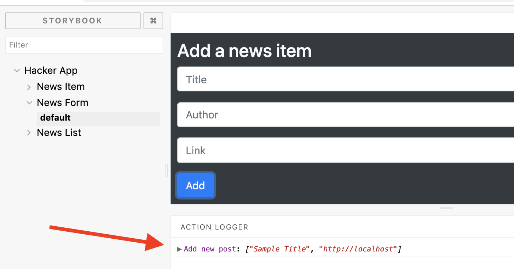

Continue the development of the Hacker News SPAs by adding statefulness and making it interactive and dynamic.
Use the code developed in the previous week (the twoApps/hackerNews folder) as the starting point for this lab.
Again we will use a stub API as the model data source. Create the file hackerNews/src/dataStore/stubAPI.js and paste in the following code:
import _ from "lodash";
class StubAPI {
constructor() {
this.posts = [
{
id: 1,
title: "Why You Can No Longer Get Lost in the Crowd",
link: "https://www.nytimes.com/2019/04/17/opinion/data-privacy.html",
author: "Woodrow Hartzog",
comments: [],
upvotes: 10
},
{
id: 2,
title: "Samsung's folding phone breaks for reviewers",
link: "https://www.bbc.com/news/technology-47970788",
author: "Dave Lee",
comments: [],
upvotes: 14
},
{
id: 3,
title:
"Microsoft turned down facial-recognition sales on human rights concerns",
link: null,
author: "Joseph Mennn",
comments: [],
upvotes: 12
},
{
id: 4,
title:
"Follow-up: I found two identical packs of Skittles, among 468 packs with a total of 27,740 Skittles",
link: "https://possiblywrong.wordpress.com/",
author: "unknown",
comments: [],
upvotes: 2
},
{
id: 5,
title: "THE COMING DESERT",
link:
"https://newleftreview.org/issues/II97/articles/mike-davis-the-coming-desert",
author: "MIKE DAVIS",
comments: [],
upvotes: 8
},
{
id: 6,
title: "Sleep myths 'damaging your health'",
link: "https://www.bbc.com/news/health-47937405",
author: "James Gallagher",
comments: [],
upvotes: 10
},
{
id: 7,
title: "Planet’s ocean-plastics problem detailed in 60-year data set",
link: "https://www.nature.com/articles/d41586-019-01252-0",
author: "Matthew Warren",
comments: [],
upvotes: 20
}
];
}
getAll() {
return this.posts;
}
add(title, author, link) {
let id = 1;
let last = _.last(this.posts);
if (last) {
id = last.id + 1;
}
let len = this.posts.length;
let newLen = this.posts.push({
id,
title,
author,
link,
comments: [],
upvotes: 0
});
return newLen > len;
}
upvote(id) {
let index = _.findIndex(this.posts, post => post.id === id);
if (index !== -1) {
this.posts[index].upvotes += 1;
return true;
}
return false;
}
getPost(id) {
let index = _.findIndex(this.posts, post => post.id === id);
let result = index !== -1 ? this.posts[index] : null;
return result;
}
addComment(postId, c, n) {
let post = this.getPost(postId);
let id = 1;
let last = _.last(post.comments);
if (last) {
id = last.id + 1;
}
post.comments.push({ id: id, comment: c, author: n, upvotes: 0 });
}
upvoteComment(postId, commentId) {
let post = this.getPost(postId);
let index = _.findIndex(post.comments, c => c.id === commentId);
if (index !== -1) {
post.comments[index].upvotes += 1;
}
}
}
export default new StubAPI();Note: An id has been added to each post (news item) object for convenience. The add method of the API computes the id of a new post by simply incrementing the id of the last one in the array. The upvote method is passed the id of the post to be upvoted.
In src/App.js completely replace the current code with the following:
import React, { Component } from 'react';
import NewsList from './components/newsList/';
import Form from './components/newsForm/';
import api from './dataStore/stubAPI';
export default class App extends Component {
render() {
let posts = api.getAll();
return (
<div className="jumbotron">
<div className="container-fluid">
<div className="row">
<div className="col-md-6 offset-3">
<h1><a href="/">Hacker News</a></h1>
</div>
</div>
<div className="row">
<div className="col-md-4 ">
<Form />
</div>
<div className="col-md-8">
<NewsList posts={posts} />
</div>
</div>
</div>
</div>
);
}
}Start the development server (npm start). The browser should render the app as before.
From the twoapps/contactlist folder update the local Git repo:
$ git add -A
$ git commit -m "Added stub API"The data entry fields of a web forms are always part of the containing component's state object. In src/components/newsForm/index.js add a state object:
export default class Form extends Component {
state = { title: '', author: '', link: ''};
render() {.........}
}We will add the upvoting feature first. When upvoting occurs the ordering of the news items must be recomputed (descending order) and the list should be re-rendered. The event that triggers a vote occurs in the NewsItem component but the App component must be informed as it computes the ordering.
In src/App.js make the following changes:
export default class App extends Component {
incrementUpvote = (id) => {
api.upvote(id) ;
this.setState({});
};
render() {
. . . . . .
<NewsList posts={posts}
upvoteHandler={this.incrementUpvote} />
. . . . . .
}The incrementUpvote function is called when the user clicks the thumb-up icon of a news item. The function must be passed down the component hierarchy to NewsItem. In components/newsList/index.js, update the render method as follows:
render() {
let items = this.props.posts.map(
(post,index) =>
<NewsItem key={index}
post={post}
upvoteHandler={this.props.upvoteHandler} />
);
return ( . . . as before . . )
}In components/newsItwm/index.js, add the onClick handler:
export default class NewsItem extends Component {
handleVote = () => this.props.upvoteHandler(this.props.post.id);
render() {
. . . . . .
return (
. . . . .
<span className="ptr" onClick={this.handleVote}>
<FontAwesomeIcon icon={["fas", "thumbs-up"]} size="2x" />
</span>
. . . . . . . .
);
}
}Assuming the development server is running, in the browser you should now be able to increment a news item's upvote count. No dynamic rerendering is happening yet. To fix this, in src/App.js make the following changes:
. . . . imports . . .
import _ from 'lodash';
export default class App extends Component {
. . . . . . .
render() {
let posts = _.sortBy(api.getAll(), post => -post.upvotes);
return (
. . . as before . .
);
}
}In the browser upvote an item a few times to force a reordering.
We should also update Storybook. In .storybook/addons.js register the addon:
import '@storybook/addon-actions/register';In stories/index.js change the relevant story:
. . . . other imports . . .
import { action } from "@storybook/addon-actions";
. . . other stories . . . .
storiesOf("Hacker App/News Item", module)
.add("default", () => <NewsItem post={post} upvoteHandler={action("upvoted")} /> )
.add("No hyperlink", () => <NewsItem post={{ ...post, link: "" }} upvoteHandler={action("upvoted")}/>);
. . . other stories . . . .From the twoApps/hackerNews folder, commit the work so far:
$ git add -A
$ git commit -m "Upvote feature completed"The add news item feature is very similar to the add contact feature in the Contact List app. Their are two aspects to the implementation:
For the first part, make the following changes to components/newsForm/index.js:
export default class Form extends Component {
state = { ... as before ....};
handleTitleChange = (e) => this.setState({title: e.target.value});
handleAuthorChange = (e) => this.setState({author: e.target.value});
handleLinkChange = (e) => this.setState({link: e.target.value});
render() {
return (
<form className="form bg-dark text-light">
<h3>Add a news item</h3>
<div className="form-group">
<input type="text"
className="form-control"
placeholder="Title"
value={this.state.title}
onChange={ this.handleTitleChange } />
</div>
<div className="form-group">
<input type="text"
className="form-control"
placeholder="Author"
value={this.state.author}
onChange={ this.handleAuthorChange } />
</div>
<div className="form-group">
<input type="text"
className="form-control"
placeholder="Link"
value={this.state.link}
onChange={ this.handleLinkChange } />
</div>
<button type="submit" className="btn btn-primary">Add</button>
</form>
);
}
}The new handler functions are simply keeping the state object in sync with the input text fields.
The submit form processing is based on the inverse data flow pattern. In src/App.js make the following addition:
export default class App extends Component {
addNewsItem = (title, author, link) => {
api.add(title, author, link);
this.setState({});
};
incrementUpvote = id => {.......}
render() {
.......
return (
......
<Form handleAdd={this.addNewsItem} />
..........
);
}
}In components/newsForm/index.js complete the pattern implementation:
export default class Form extends Component {
state = { ....};
handleSubmit = (e) => {
e.preventDefault();
this.props.handleAdd( this.state.title, this.state.author, this.state.link)
this.setState({ title: '', author:'', link: ''})
}
....other handlers .....
render() {
........
return (
.......
<button type="submit" className="btn btn-primary"
onClick={this.handleSubmit}>Add</button>
.....
);
}
}Start the development server (npm start) and try adding a new news item (and upvoting it)
From the twoApps/hackerNews folder, commit the work so far:
$ git add -A
$ git commit -m "Add news post feature completed"For completeness we should update the Storybook code for the NewsForm component. Do this as an exercise.
The screenshot shows a sample result after filling in the form fields and hitting the submit/Add button.

On completion, go to the hackerNews folder and commit the work:
$ git add -A
$ git commit -m "Updated Storybook"